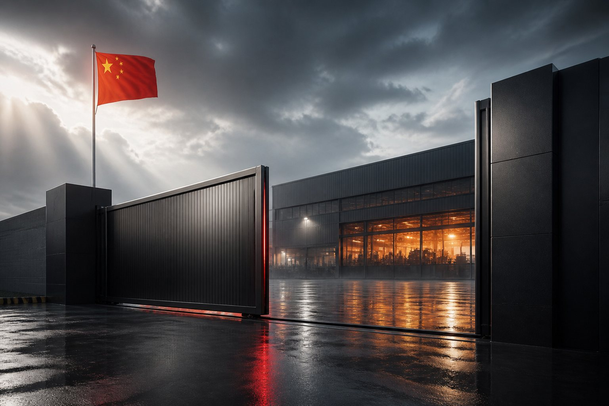

איתור המפעל שמייצר בפועל
שלושה מפעלים שנבדקו בשטח — רישום, בעלות וקו ייצור — ושלוש הצעות מחיר מולם.
רוב מי שמפרסם באנגלית הוא חברת מסחר, לא יצרן. אנחנו בודקים רישום ובעלות, מגיעים לשער, רואים את קו הייצור ומוודאים שהוא כבר ייצר מוצר כמו שלך — ורק אז מבקשים הצעה.
- בדיקת רישום, בעלות ומי באמת עומד מאחורי המוצר
- בחינת קו הייצור, כושר הייצור וניסיון במוצר כמו שלך
- ביקור פיזי בשער כשהיקף העסקה מצדיק את זה
- סינון חברות מסחר שמציגות את עצמן כמפעל